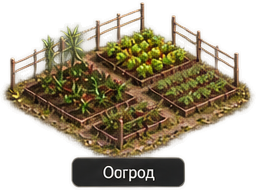

Каждый день выжившие съедают готовые блюда. Если еды не хватает, используют аварийные пайки (старый запас 🥫). Разнообразие повышает мораль, голод ухудшает здоровье. В экспедиции люди расходуют пайки.

Ферма
🍲 Кухня и рецепты
Ингредиенты берутся со склада урожая и экспедиций. Готовые блюда повышают запас еды. Уровень повара и оборудование ограничивают меню.
🗺️ Окрестности убежища
Нажми на клетку, выбери действие и назначь отряд.
📻 Связь отсутствует
Экспедиции · выжившие
Журнал событий
Выбери постройку и нажми на свободную клетку.
Здания внутри ограды производят ресурсы. Башни и ловушки можно размещать за её пределами. Прогресс сохраняется в браузере. Это локальный прототип, пока без сервера MMO.
🔨 Строительство
Выбери здание. Каталог закроется, затем коснись свободной клетки на карте убежища.
Столовая
Книга рецептов
Готовые блюда
Припасы
Назначение на кухню
Режим работы столовой
Кухня работает сама. Продукты списываются при постановке в очередь; готовые блюда поступают на склад после окончания таймера.
 Столовая
Столовая